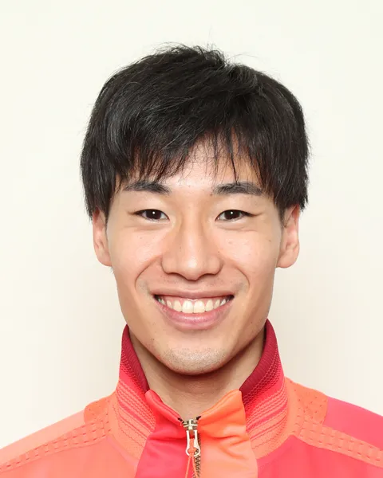

格闘技
•
フェンシング / 男子エペ個人 / 団体
かのう こうき
加納 虹輝
Koki Kano
🏢 所属: JAL
🏅 パリ五輪個人金メダル（日本フェンシング史上初）🏅 東京五輪団体金メダル🏅 愛知県出身
愛知が生んだ世界の頂点！研ぎ澄まされた剣先で日本フェンシング個人初の五輪金メダルを獲得したエース
愛知・名古屋2026 今大会最終結果
金メダル 🥇（男子エペ個人 優勝）
決勝: 15-12 勝利（明日より団体戦へ）
パリ五輪個人金に続き、アジア大会でも神業のカウンターアタックが炸裂。見事個人金メダルを獲得し、明日からの団体戦に挑む。
🎬 最後のシーン（決定的瞬間・ハイライト）
14-12から相手のアタックをかわして見事にフリックで突いた金メダル決定のウィニングショット。
▶️ 【YouTube】決勝戦 ラスト1本を突き刺しマスクを脱ぎ捨て雄叫びの瞬間 を見る
📊 公式トーナメント表・競技記録速報（Draw/Results）
男子エペ個人 決勝トーナメント表＆ポイント経過記録
📊 【国際フェンシング連盟 (FIE) / 日本フェンシング協会】FIE公式 対戦ブラケット表 を見る ➔
経歴・これまでの歩み
愛知県あま市出身。小学6年でフルーレを始め、高校でエペに転向。早稲田大学スポーツ科学部へ進学。2021年東京五輪で日本男子エペ団体初となる金メダルを獲得。2024年パリ五輪では男子エペ個人で日本フェンシング史上初の個人金メダルを獲得し、団体でも銀メダルを獲得した。
主要大会ハイライト戦績
2024年
パリオリンピック
男子エペ個人 金メダル / 団体 銀メダル
2023年
杭州アジア大会
男子エペ団体 金メダル / 個人 銀メダル
2021年
東京オリンピック
男子エペ団体 金メダル
プレイスタイル＆世界を制する武器
相手の手元や足元など小さな隙をミリ単位で捉える精密なアタック（クー・ド・マンシェ）。相手の攻撃を誘い出してカウンターを刺す心理戦の強さが光ります。
専門家・メディアによる客観的分析・批評
✨
強み・世界トップ水準の評価
ミリ単位で相手の手元や足元を突く『クー・ド・マンシェ』の精度と、一撃のカウンターを狙う心理戦での冷静沈着さは世界フェンシング界のトップ。
出典・ソース:
国際フェンシング連盟 (FIE) / 太田雄貴氏
⚠️
課題・懸念される客観的事実
長身の欧州勢が極端に距離を詰めてくる接近戦での対応や、同時突き（ドゥブル）の点数管理における紙一重の勝負リスク。
出典・ソース:
フェンシングジャーナル
愛知・名古屋2026への決意とメッセージ
大会スケジュール＆観戦のツボ
🗓️ 出場予定日程・会場
2026年9月24日 個人戦 / 9月27日 団体戦（愛知県体育館）
👀 観戦の注目ポイント
全身が有効面となるエペならではの緊迫した間合いの攻防と、一瞬の隙を突く鋭い突きの瞬間。